Stage Write: TimeLine Reborn
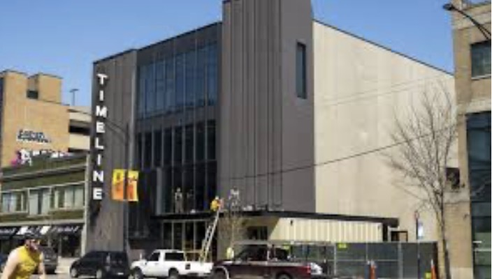
“It was nice to be in a purpose-built theater instead of a make-shift church space.” — Preview audience member at TimeLine’s new Broadway theater
When six graduates of The Theater School at DePaul University pooled $50 each to start TimeLine Theatre in 1996, it’s doubtful that they envisioned the handsome new theater that just opened on Broadway. A renovated Reebie Brothers warehouse, the theater was designed by the Arts and Culture studios of HGA, an architecture and engineering firm known for its performing arts experience. TimeLine has, over its 30-year history, established itself as a leading member of Chicago’s theater community, known for its plays with historic significance that resonate with today’s issues. Winner of 64 Jeff Awards for excellence, including 11 for Outstanding Production, TimeLine has grown from 25 years at 615 W. Wellington Avenue plus 8 other rented locations for individual productions to its very own permanent home.
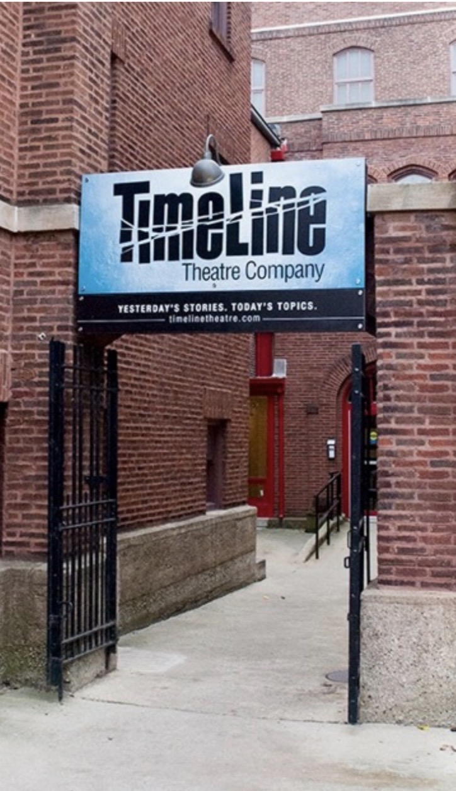
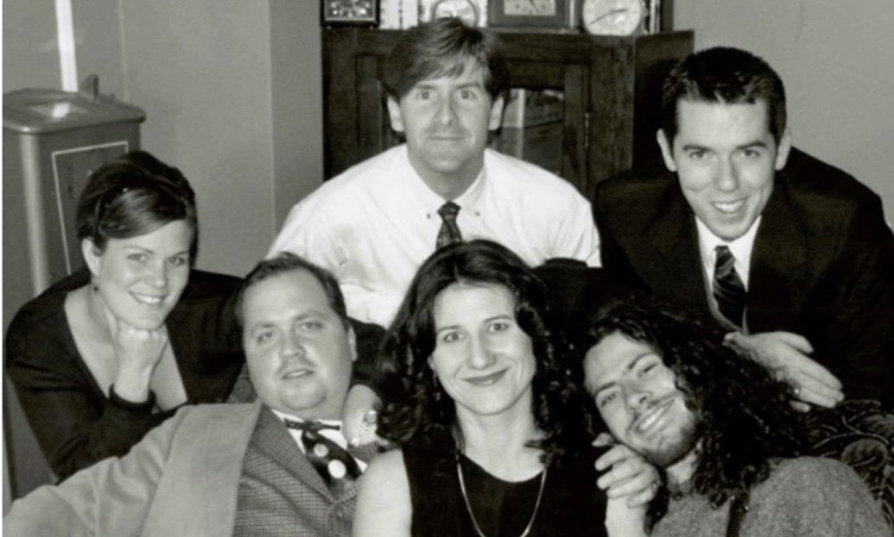
A theater has many stakeholders—its donors, its designers and technicians, its actors, and most important of all, its audiences who will determine whether the theater succeeds or fails. One month into TimeLine’s new venue, these varied perspectives give a hint about the theater’s potential success.
John Culbert was there at the beginning. A faculty member at the DePaul Theater School when a group of graduates, his former students, first pooled their resources and talent, he has designed sets and lighting for over a dozen Chicago theaters and even lighting for Buckingham Fountain. Having created sets for five previous TimeLine productions, the award-winning set and lighting designer was more than familiar with the limits of the previous venue when he was asked to design its first production in the new space, Henrik Ibsen’s Enemy of the People. The theater had previously rented a black box space and limited adjacent rooms from the Wellington Avenue United Church of Christ, sharing restrooms with a nursery school and reception space with various church activities.
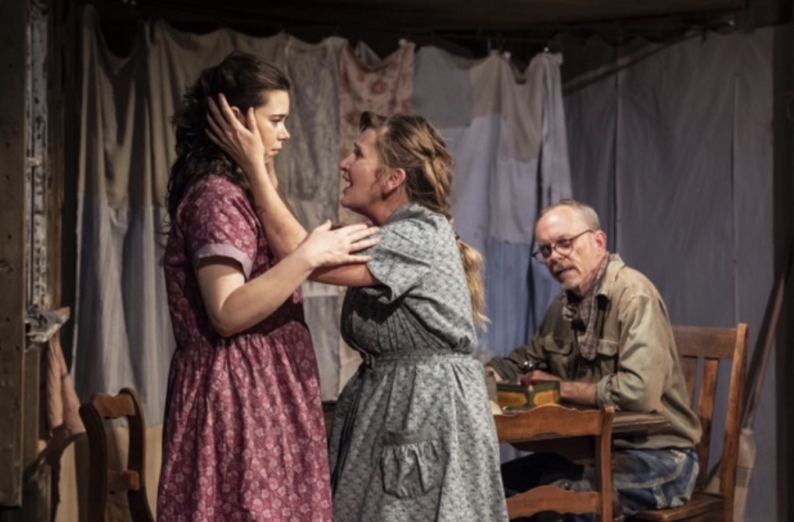
“There’s a low ceiling, there are only entrances in certain points of the room…it’s hard to get anything in that room...you have to bring everything up the stairs…to get from one entrance to another is a journey, you go up and down and all-around stairs. If you want an actor to exit over here and enter over there you have got to have some time in between because it takes a while. There’s also limited electricity available [sometimes requiring a choice between lighting and air conditioning], and you can’t hang anything in the space because there’s no structure in the ceiling you can hang it from… and it was not really accessible for audience or community members.”
Audiences as well as actors were well aware of the lack of air conditioning on hot summer evenings. Even the restrooms presented challenges, with toddler-sized toilets in some stalls.
These were just some of the issues that were addressed head on by the design team. Culbert noted, “The proportions of the new theater are very different from the old one. It’s probably three times the size of the old one…Of course it has many more seats. The old theater had 99 seats. The current configuration has 240 seats.” And the new restrooms? There are a dozen individual unisex stalls with carefully selected vintage light fixtures.
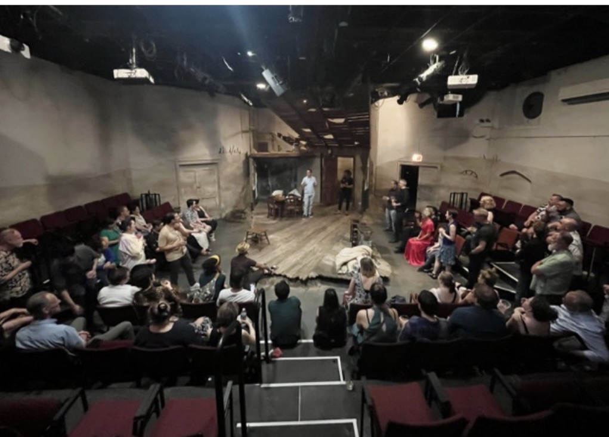
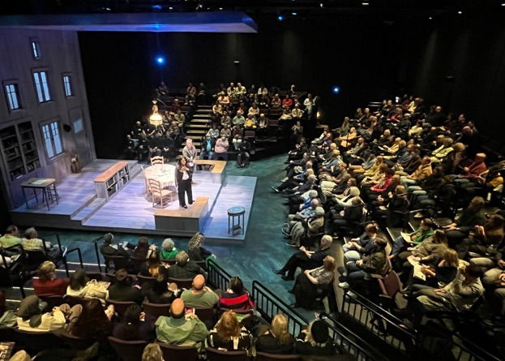
There were important benefits of the Wellington Avenue space that the theater knew were critical to preserve. The intimacy of the small space was of prime importance. TimeLine also had the flexibility to rearrange the audience seating for different productions, “so when you went there you never knew if it was going to be in the round, is it going to be an alley theater, will it be rows of seats facing each other, is it going to be thrust style. That was one of the aspects we wanted to retain in the new space, so it can be arranged as per the needs of any individual show,” said Culbert.
“One of the first things Ron [Ron OJ Parsons, the director] and I talked about was the relationship we wanted with the audience for this production. We selected one of the thrust arrangements because there is the same number of audience members on each side of the stage; that felt more intimate to us...we wanted the same scale of audience on all three sides.”
“The new ceiling is 21 feet high, about twice the height of the old space. It means you can create a larger sense of scale than the old space, and you can think about how you want to contain the volume of the space; so you end up with a ceiling…that really wasn’t available in the old space,” said Culbert.
“The conversations [with the design team] start with conversations about the play…getting us all on the page about the story we’re telling and how does the story work theatrically. There are three different locations in the play…we don’t want to stop the story while scenery lumbers around.” In the old theater, changing the scenery would have been difficult; here lighting can vary with many more tools. A supportive infrastructure gave Culbert attractive options. “We could fly different chandeliers through the hole in the ceiling. A Norwegian dining room becomes a public meeting hall.”
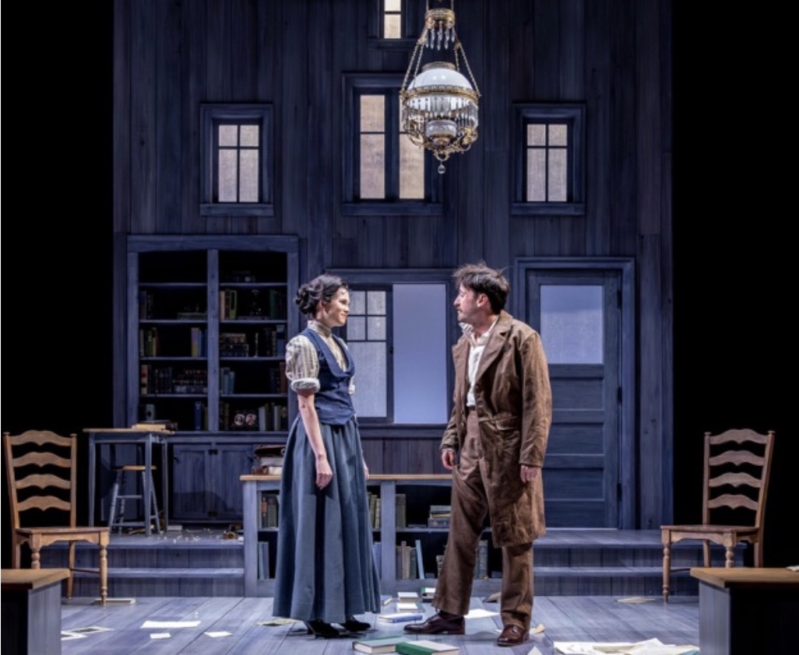
For actors, the lack of space on Wellington presented different challenges. A fixture in Chicago’s theater scene and a veteran of TimeLine plays, Anish Jethmalani plays the conflicted printer Askalsen in Enemy of the People. He is very familiar with the idiosyncrasies of the former TimeLine space.
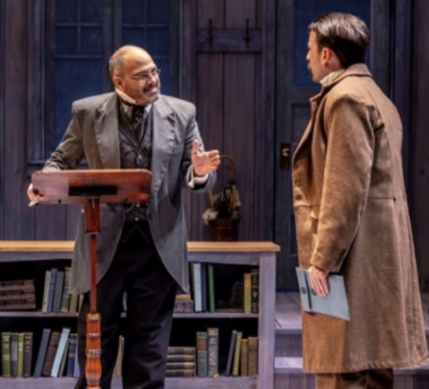
“We had flexibility there to configure the space, but it is nestled inside of a very old church. The stairs would creak, so we had to be judicious when we went down the stairs backstage, tiptoeing on those stairs. Some of our crossovers were in the basement. If there was a quick change on a crossover, sometimes we would run into doors that were locked so that would prevent us from getting on stage on time. The dressing area was a shared dressing room, so we had to sometimes put up curtains to separate people.”
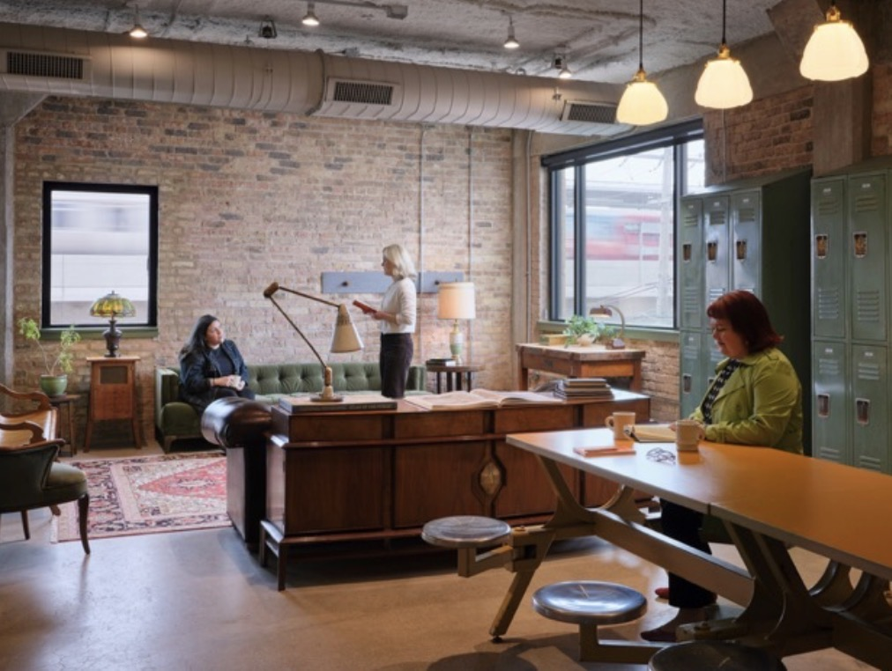
Anish reacted to the new plans with delight. “It was just jaw dropping to see the landscape we had the ability to play on… You couldn’t believe it was going to happen…many many diagrams over many many years…surreal…are we still renters?” CCM spoke to Jethmalani after the first two previews of Enemy of the People, when the cast had its first public experiences on the new stage.
Previews are the shake-down cruise for a play. Blocking, sight lines, technical cues, entrances and exits, and timing are just a few of the areas where a production can change before opening night. For a new theater, the previews take on special importance.
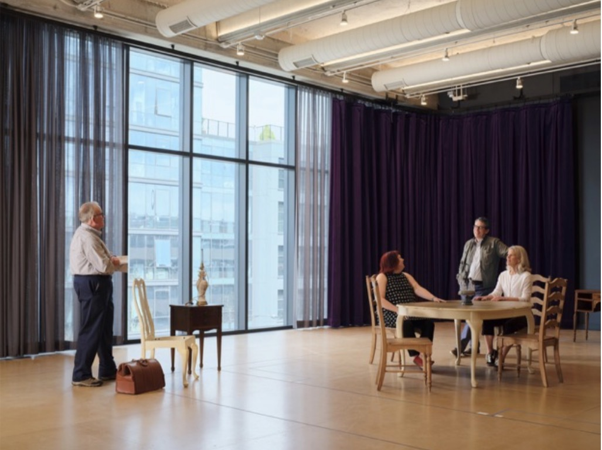
“I feel like we’re the guinea pigs,” said Jethmalani, “figuring out those things as we go, what needs to be addressed and what’s going well. [Here] there’s still a level of intimacy. We can really ramp up our production values. We have to step it up a little bit to make sure the audience can see and hear. Because it’s a bigger space, it’s equivalent to some of the better theaters in town. It really allows the audience to see us from more than one perspective at a time. That’s really important to [the director, Ron OJ Powers] that we don’t get static. In terms of the projection, we wanted to be sure that noise doesn’t get into the space. [Serious sound proofing was necessary to block the noise of the adjacent CTA.] This put a lot of the onus on us so that people could hear us. That’s our job as actors.”
Tweaks were in order after the second preview. Door handles needed to be added, travel routes altered, stage positions improved, even cup holders on seats adjusted.
“As artists we’re sometimes compared to athletes,” Jethmalani continued. “We have to keep our voice in shape; we must keep physically in shape. [A larger theater] gives us more ability to exercise those muscles… really be able to step up our game physically. The audience is still with us; we as artists have to be more cognizant of how we’re communicating with them and how we’re telling the story. The play very much speaks to our mission. Even though the themes are over 100 years old, they’re still very relevant.” Ibsen’s story of a whistle-blower battling a town financially dependent on a polluted water source is indeed related to current national concerns about funding for environmental problems.
Audiences who had searched for street parking near the Wellington location are pleased by the next-door parking lot and closeness to the Argyle L stop. Patron Tom Sheffield was concerned about the location and the distance from his Lake Shore Drive apartment, but discovered just how close it was, taking only about 10–15 minutes to get to the theater. He and his wife Pam had always had a bagel dinner near the previous theater but discovered that Co5 Kitchen just down the street offers delicious Vietnamese food for a pre-theater meal. Entering the theater, Tom remembered having to stand in the old lobby and was delighted by the new option: “walking in and sitting down… was wonderful!” he said.
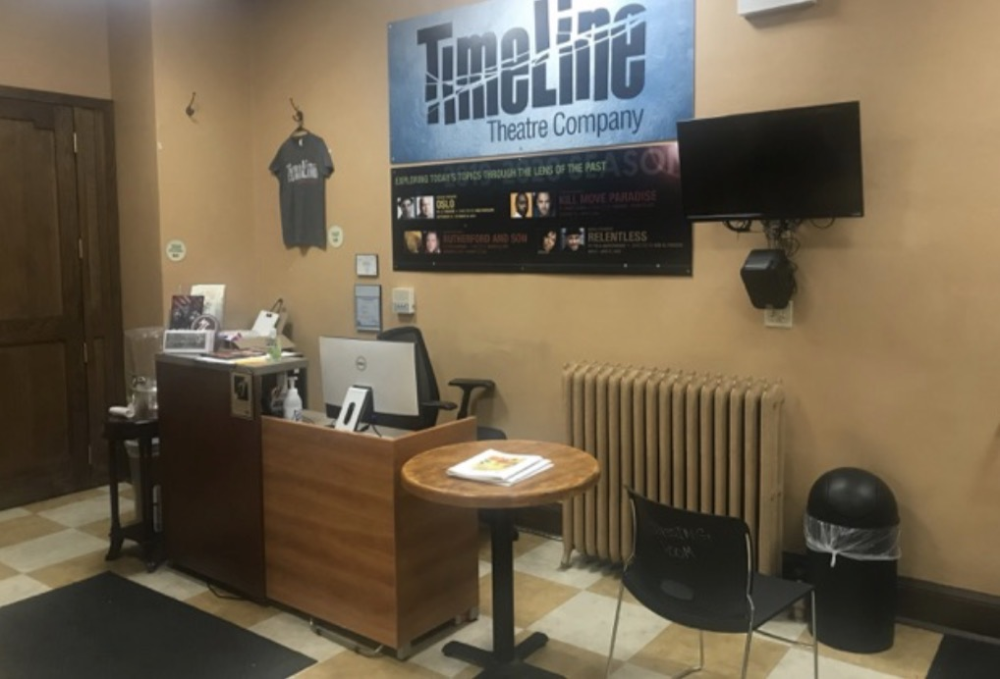
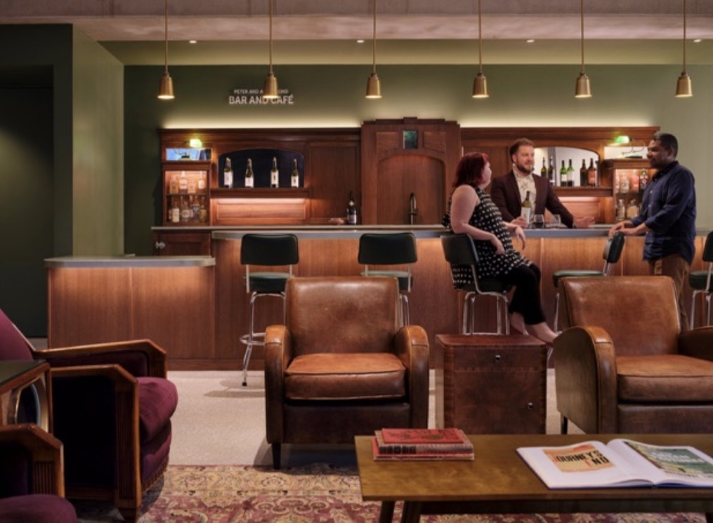
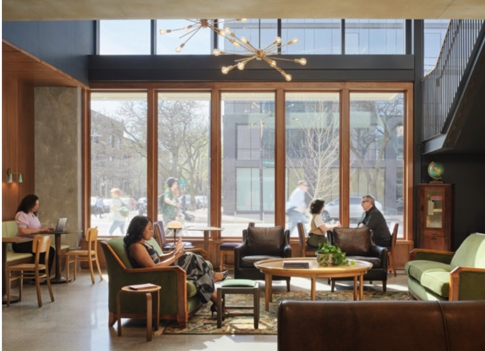
The ample retro first floor lounge and bar, open for two hours before the show and one hour afterwards, attracted dozens before the curtain rose. Tom described the new audience experience as great. “The seats are much more comfortable and slightly larger.”
Penny and Bill Obenshain are longtime TimeLine donors who inspired many friends to support the new theater. They joined a sell-out crowd for its opening night fundraiser May 16.
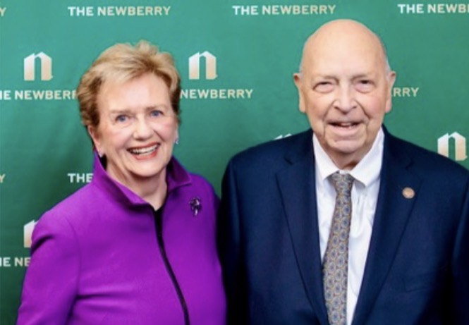
The Obenshains first started attending TimeLine many years ago when they were sampling other Chicago theaters. “We had a subscription to another theater and felt really assaulted [by the choice of plays]. We went to our first TimeLine play and really liked it…we liked the idea of TimeLine. Bill got more and more involved [and joined the board]; he liked the focus on history and good leadership,” said Penny.
The theater’s fiscal responsibility was a major draw as well. “When they were raising money [for the new theater], they did not do anything until they had the money to do it,” she said. The Obenshains often talked about the plays with their friends and invited them to productions. Their friends started coming and, like the Obenshains, became donors. “It evolved naturally,” noted Penny.
In addition to appreciating the intimacy and flexibility of the Wellington Avenue theater, the Obenshains looked forward to getting the Backstory publication that provides historical background for each play. They are pleased that Backstory will continue as do curated exhibits at the theater itself that explain the period and issues that characterize each play.
Comfortable seats; easily accessible, adult-sized restroom facilities; and a generous lobby are also welcome highlights of the new space. Penny summed up their enthusiastic support for TimeLine as a theater that is “cautious, ambitious, and fiscally responsible.”
“You’re seeing theaters close down…I feel like the TimeLine story in this building is remarkable in light of the challenges that have hit the theater industry not only in Chicago but across the nation as well. It makes you believe...that you will never be able to replace an art form like ours,” said Jethmalani.
Culbert makes the case for first impressions. “When you walk in the door…In the old theater, you think they’re scrappy and they make this work. In this one, you walk in the door and you realize they take this seriously.” Initial media reviews are positive. Time will tell how TimeLine builds on its impressive first steps.
About the Author: Elizabeth Dunlop Richter →